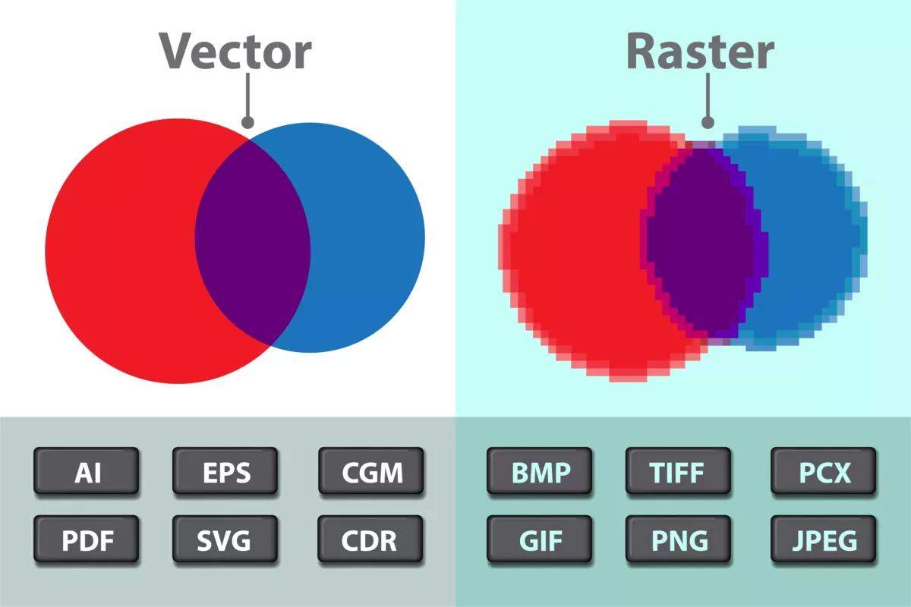

LaTeX 教學系列：表格與圖片的處理
深入學習 LaTeX 表格與圖片處理技巧，打造專業排版效果！
當我們撰寫文件時，表格和圖片是不可或缺的元素。一份全部都是文字、長篇大論的文件，完全不會讓讀者有興趣繼續看下去，就算看下去了，也會興致缺缺；然而，當文字與表格或圖片交錯後，一方面可以將大量的資訊彙整起來，讓讀者快速知道文章的內容，另一方面，表格或圖片可以進行「比較」，讀者可以很快速地將不同資訊進行比對、了解不同模型、想法的差異。
在這篇文章中，你會學到：
- 建立、設定表格
- 插入與調整圖片
先備知識
表格是一種將資訊或數據整理成行列或更複雜結構的方式，通常用於通訊、研究與數據分析。表格可以出現在印刷品、手寫筆記、電腦軟體、建築裝飾、交通號誌等多種情境中。1
Word 與 LaTeX 在處理表格上有些許的不同。如果你常使用 Word，會發現只要點擊插入後，選擇插入表格，拉出想要的行數與列數即可。如果想要更改表格的樣式，或是更改欄寬、行高，則在版面配置修改即可。這一點 LaTeX 就不如 Word 方便。
這樣還要學 LaTeX 的表格幹嘛？
當然，論方便性，LaTeX 在處理表格上較繁瑣，但論美觀以及專業性而言，LaTeX 遠勝於 Word。比起 Word，LaTeX 更適合處理學術上的表格，例如迴歸分析表、三線表，LaTeX 表現得更好。
圖片的話，則是 LaTeX 略勝一籌。用過 Word 的你肯定遇到過，插入圖片之後需要調整文繞圖、圖繞文等等；調整完畢之後，可能圖片會在奇怪的位置，甚至跑到文本上面。但是 LaTeX 就不太會面臨這樣的窘境。
老樣子，在開始介紹如何使用表格與圖片之前，需要複習一下與表格還有圖片相關的內容，以及先備知識。
對齊
在LaTeX 教學系列：數學排版中，我們提到對齊大部分都需要使用 & 符號。例如我們想要將 \(2x + y = 10\) 與 \(5x + 4y = 18\) 這兩條方程式以等號進行對齊，則可以使用以下程式碼：
\begin{aligned}
2x + y &= 10\\
5x + 4y &= 18
\end{aligned}排版結果如下：
\[ \begin{aligned} 2x + y &= 10\\ 5x + 4y &= 18 \end{aligned} \]
浮動環境
使用 Word 插入表格或圖片時，很常會遇到表格或圖片過大，導致不合理的分頁。白話來說，表格或圖片斷在不應該斷掉的地方，導致資訊與頁數不連貫。為了避免上述情況，我們需要使用浮動環境。
所謂浮動環境或浮動體，是一個無法跨頁的結構，且具有以下特性：2
- 是一個容器，包含篇幅較大不適合分割的內容
- 具有簡短描述，如圖 1、表 2 …等
- 具有編號，用於交叉引用
在 LaTeX 中，最常使用的浮動環境套件是 float 與 placeins。我們會在下面進行討論，先別操之過急！
表格
LaTeX 有不同種類的表格，每種種類的表格都需要相應的套件。以下先介紹不同表格環境與所需套件，還有它們對應的使用時機。
| 表格環境 | 所需套件 | 使用時機 |
|---|---|---|
tabular |
無 | 基本表格，適合簡單的表格結構 |
tabularx |
tabularx |
自動調整列寬以適應整個頁面寬度時使用 |
array |
array |
在表格中使用數學模式或自定義列類型時使用 |
longtable |
longtable |
當表格需要跨頁顯示時使用 |
supertabular |
supertabular |
當表格需要跨頁顯示，且希望在每頁重新標題並自動處理標題和腳註時使用 |
multirow |
multirow |
當需要在表格中合併多行時使用 |
colortbl |
colortbl |
當需要在表格中使用顏色時使用 |
table |
無 | 當需要將表格作為浮動環境，並可以添加標題和註解時使用 |
table* |
無 | 當需要將表格作為跨欄的浮動環境，並可以添加標題和註解時使用 |
threeparttable |
threeparttable |
當需要添加註腳，並希望註腳不隨表格一起移動時使用 |
tabular
在 LaTeX 中，table 和 tabular 環境的搭配使用是建立表格的常見方法。以下會先介紹如何使用這兩個環境，並講解如何使用這兩個環境建立三線表。
基本使用
table 環境主要負責處理表格的浮動位置和標題，避免跑版，而 tabular 環境則定義表格的實際內容和結構。
先以
\begin{table}開始 table 環境，可以使用\centering將表格置中。接著使用
\begin{tabular}開始tabular環境，在大括號中定義列的對齊方式，如{lcc}表示置左、置中、置中的三列，其中l代表置左（left）、c代表置中、r代表置右。在
tabular環境中，使用&分隔單元格，以|繪製垂直分隔線，並用\結束每一行，可以使用\hline添加水平分隔線。表格內容完成後，結束
tabular環境，然後可以使用\caption{}添加表格標題，使用\label{}為表格添加標籤，以便後續文中的引用。最後結束 table 環境。
一個簡單的表格可能如下所示：
在上面的例子中，可以看到表格的位置在頁面的最下面，這是因為我們沒有將表格進行固定。這時候我們就需要這篇文章最前面提到的 float 套件。
使用 float 套件很簡單，只要在前言區載入套件後，在 \begin{table} 後面加上方括號 []，並在裡面設定如何處理此浮動環境。以下是一些可以調整的位置參數
H：強制將浮動環境放在當前位置（即程式碼所在處）h: 嘗試將浮動環境放在當前位置t：允許將浮動環境放在頁面頂部b：允許將浮動環境放在頁面底部p：允許將浮動環境放在單獨的浮動頁面上!：告訴 LaTeX 忽略一些內部參數限制，讓放置浮動環境的規則更加寬鬆
舉例來說，!htb 的組合代表著 LaTeX 會嘗試以下順序：盡可能在當前位置放置浮動體，如果不行，則嘗試頁面頂部，如果還不行，則嘗試頁面底部。而 !htbp 則多了一個選項，如果前面都不行，最後會考慮將浮動體放在單獨的頁面上。
底下的程式碼提供一個使用 float 進行浮動環境調整的例子：
建立三線表
三線表是學術論文和科技文獻中常用的一種表格樣式，它的特點是整個表格**只有三條水平線*（像是這樣 (lll ￣v￣).），因此得名「三線表」。 LaTeX 中建立三線表多半使用 booktabs 套件。以下是一個簡單的例子：3
其中，三線表的三條線分別有對應的指令：
\toprule繪製頂部粗線\midrule繪製表頭下方的細線（請注意，是細線）\bottomrule繪製底部粗線
表格寬度問題
上面的例子中，可以看到表格的寬度都是固定的，但是如果我們想要調整表格寬度怎麼處理呢？在 tabular 環境中，我們可以使用 p{...}、m{...} 和 b{...} 來調整列的寬度，允許使用者指定固定寬度的列。調整欄位寬度需要載入 array 套件，但此處的 array 套件與後面要介紹的 array 環境無太大關係，請讀者注意。
p{寬度}: 建立一個固定寬度的列，內容從頂部開始垂直對齊。m{寬度}: 建立一個固定寬度的列，內容垂直置中對齊。b{寬度}: 建立一個固定寬度的列，內容從底部開始垂直對齊。
而寬度可以使用任何有效的 LaTeX 長度單位，如 cm、mm、in、em 等。
其他更多有關欄位調整的方式，請參考下方表格：
| 語法 | 功能 | 語法 | 功能 |
|---|---|---|---|
p{寬度} |
文字折行 | \arrayrulewidth=單位長度 |
調整表格線條粗細 |
@{文字、符號或指令} |
該欄文字套用指令 | \tabcolsep=單位長度 |
調整兩欄位的左右間距 |
\multicolumn{欄數}{位置}{文字} |
跨欄排版 | \doublerulesep=單位長度 |
調整雙線間距 |
\cline{a-b} |
部份欄位的橫線 | \arraystretch |
調整表格上下行距 |
tabularx
tabularx 環境是 LaTeX 中的一個強大工具，用於建立寬度固定的表格。與標準的 tabular 環境不同，tabularx 允許使用者指定表格的總寬度，並自動調整列寬以適應這個指定的寬度，對於建立需要填滿頁面寬度或特定寬度的表格時特別有用。
此外，tabularx 環境引入了一種新的列類型 X，它會自動擴展以填充可用空間，與 tabular 環境中的 l、c、r 等固定寬度的列類型形成對比，且使用 X 列可以確保表格內容均勻分佈，避免某些列過寬或過窄的問題。以下是一個使用 tabularx 的實際例子：4
在這個例子中，表格寬度被設置為 \textwidth，即頁面的文本寬度。第一列使用 l 類型保持置左和固定寬度，而後兩列使用 X 類型自動調整寬度以填充剩餘空間。如此一來可以確保較長的文本內容（如職責描述和工作成果）有足夠的空間顯示，同時保持表格整體美觀。
array
array 環境與 tabular 和 tabularx 環境不同，array 環境專門設計用於數學公式和表達式，通常在 equation 或 $$ 數學環境中使用。
array 環境的主要特點是它自動進入數學模式，不需要額外的 $ 符號來標記數學內容。此外還提供了更多適合數學排版的列類型，如置中的 c、置左的 l 和置右的 r。
與 tabular 相比，array 更適合處理數學符號和表達式，但在處理一般文本時不如 tabular 靈活；tabularx 則強調自動調整表格寬度以適應指定的總寬度，這是 array 所不具備的功能。
以下是一個使用 array 環境的實際例子：
上述例子建立了一個包含三個方程式的聯立方程組，每個方程式佔一行。此外，array 環境在建立矩陣時特別有用：
此例中建立了一個增廣矩陣（augmented matrix）。
longtable
當文章內的表格太長，不足以一頁顯示完畢的話，LaTeX 中的表格如 tabular 與 tabularx 不會自動換頁，而是直接跑到最下面，例如：
為了處理這樣的問題，我們使用 longtable 環境。longtable 環境是 LaTeX 中用於建立可跨頁的長表格的工具，這是它與 tabular 和 tabularx 最顯著的區別——當表格內容過長無法在單頁內完整顯示時，longtable 能夠自動將表格分割成多個部分，並在每頁的表格開頭和結尾添加適當的標題和註腳。
與 tabular 相比，longtable 提供了更多的控制選項，如設置每頁重複的表頭和表尾。而相較於 tabularx，longtable 不自動調整列寬，但可以處理任意長度的表格內容。
注意到 longtable 環境需要載入 longtable 套件才能使用，其語法類似於 tabular，但增加了一些特殊指令來定義表格的不同部分。以下是實際操作的範例：5
supertabular
supertabular 環境是 LaTeX 中用於創建長表格的工具，特別適用於需要跨頁的表格。你可能會想說：「那這與 longtable 有何不同呢？」下面的表格比較 supertabular 與 longtable 兩個環境的差異，或許就能夠知道差在哪了！
| 特性 | supertabular | longtable |
|---|---|---|
| 工作原理 | 逐頁處理表格 | 一次性處理整個表格後分頁 |
| 內存使用 | 較少 | 較多，需保存整個表格 |
| 浮動環境 | 不是浮動體，固定位置 | 可作為浮動體使用 |
| 表格寬度 | 不同頁面可能有細微差異 | 所有頁面保持一致 |
| 跨頁單元格 | 不支持 | 支持 |
| 頁面平衡 | 可能在底部留下較大空白 | 通常能更好地平衡頁面 |
| 使用複雜度 | 語法相對簡單，易用 | 語法較複雜，但有更多控制選項 |
| 適用場景 | 較簡單的長表格，內存受限情況 | 需要精確控制和複雜格式的長表格 |
supertabular 的一個主要特點是它允許使用者定義表格的不同部分，如表頭、表尾和延續標記等，使得長表格在跨頁時能保持一致的格式和清晰的結構。
threeparttable
這個環境看它的名字肯定知道，這是拿來繪製三線表的！如果你這樣想的話，就太小看 threeparttable 了。
threeparttable 環境不僅可以用來製作三線表，它更可以用來建立一個帶有註釋的表格。它的主要特點是能夠將表格主體、表格標題和表格註釋（通常是腳註）結合在一起，形成一個統一的整體。與傳統的 tabular 環境搭配 booktabs 套件使用相比，threeparttable 有以下幾個主要差異：
當然，我可以為您提供一個 Markdown 表格，展示 threeparttable 和 tabular+booktabs 的主要差別：
| 特性 | threeparttable | tabular +。booktabs |
|---|---|---|
| 主要功能 | 整合表格、標題和註釋 | 創建美觀的表格結構 |
| 註釋處理 | 專門設計，易於管理 | 需要額外調整 |
| 寬度控制 | 自動調整註釋寬度 | 需要手動控制 |
| 浮動環境兼容性 | 專為浮動環境設計 | 可用於浮動環境，但需額外設定 |
以下是一個 threeparttable 的例子6：
在這個例子中，我們結合了 threeparttable 和 booktabs 的優點。threeparttable 環境包裹了整個表格結構，包括標題、表格主體和註釋。booktabs 的 \toprule、\midrule 和 \bottomrule 指令就不特別說明，而 \tnote 指令用於在表格中加入註釋，對應的解釋放在 tablenotes 環境中。
圖片
不曉得大家是否遇過下列這種情況：在看論文或是自己撰寫論文時，圖片的解析度通常都不夠高，或是圖片會難以放置在正確的位置上甚至隨意跑動。首先，我們可以先就圖片解析度這件事進行討論，如果我們使用的圖片是點陣圖類型的圖檔，例如.bmp、.jpg、.png 和 TIFF，就會像下方上圖所示，圖片邊緣是鋸齒狀的，當讀者放大後便會是一個個的點。但如果圖片是向量圖，例如.svg、eps 或 pdf，圖片的邊緣是平滑的，放大後不會看到鋸齒狀的結構。因此在 LaTeX 中，我們可以多加使用向量圖的解析度，將圖片放置於文件中。

另外，針對圖片無法在文件中放置於正確的位置上，我們可以使用表格也同樣使用到的浮動環境來解決這個問題。我們就先來看如何在 LaTeX 中插入圖片吧。
插入圖片基本方法
LaTeX 插入圖片的過程相對簡單。首先，我們需要在文檔的前言區載入 graphicx 套件，該套件提供了插入和操作圖片的功能。接著，我們可以使用 \includegraphics 指令來插入圖片。通常來說，我們會將圖片放在 figure 環境中，這樣可以更好地控制圖片的位置與浮動環境，同時也可以加入標題與標籤。
插入圖片時，我們可以調整圖片的大小、旋轉角度等。例如，使用 width 參數可以設置圖片寬度，常用 \textwidth 來指定與文本寬度相關的比例。\centering 指令用於將圖片置中。\caption 用於添加圖片說明，\label 則用於為圖片添加標籤，方便在文中引用。
關於圖片文件，LaTeX 支援多種常見格式，如 PNG、JPEG、PDF 等。圖片文件通常應該與 .tex 文件放在同一目錄下，或者使用 \graphicspath 指令指定圖片所在的目錄路徑。下面是具體例子：
在上面的例子中，我們將圖片的寬度設定為 0.8 倍的 textwidth，讓圖片不要那麼大張。
不同圖片格式
在 LaTeX 中，除了常見的 PNG 和 JPG 格式外，還支持多種高解析度的圖片格式，能夠滿足不同的排版需求，例如 PDF、SVG、EPS 等。這些格式各有其特點，使用時需要搭配對應的 LaTeX 套件以達到最佳的插圖效果。
插入 PDF 文件
在學術論文、報告或書籍排版中，我們經常需要插入來自其他 PDF 文件的圖表或頁面。LaTeX 中最常用的是 pdfpages 套件，允許我們插入整份 PDF 文件，還能選擇性地只插入特定頁面，甚至可以調整插入頁面的大小和方向。
基本用法
首先，我們需要在 LaTe X文件的前言區載入 pdfpages 套件，接著，在本文的地方可以使用 \includepdf{} 指令插入 PDF 頁面。最基本的用法如下：7
上述程式碼會將名為 example.pdf 的文件的第一頁插入到程式碼所在位置，並加上標題和標籤。
進階技巧
上面提到 pdfpages 套件可以允許使用者進行額外的設定，以下直接用表格呈現可以設定的參數，並且提供範例與解釋。
| 參數 | 功能 | 範例 |
|---|---|---|
pages |
指定要插入的頁面 | pages={1,3,5-7} |
scale |
調整插入頁面的大小 | scale=0.8 |
angle |
旋轉插入的頁面 | angle=90 |
frame |
為插入的頁面添加邊框 | frame=true |
nup |
在一頁中排列多個頁面 | nup=2x2 |
landscape |
設置頁面方向為橫向 | landscape=true |
width |
設置插入頁面的寬度 | width=\textwidth |
height |
設置插入頁面的高度 | height=0.9\textheight |
offset |
調整頁面位置 | offset=1cm 2cm |
pagecommand |
在每個插入的頁面上執行LaTeX指令 | pagecommand={\thispagestyle{empty}} |
例如，如果想插入一個 PDF 的第 2 頁，將其縮小到 80%，旋轉 45 度，並加上邊框，可以使用以下指令：
\includepdf[pages={2}, scale=0.8, angle=45, frame=true]{example.pdf}插入 SVG 圖片
SVG 格式在多種情況下都十分有用，尤其是在需要高解析度或可縮放圖像的場景，例如複雜的數學圖表或科學插圖、數據可視化的統計圖表和圖形。SVG 格式的主要優勢在於，它可以無限縮放而不失真，且文件大小通常較小。
在 LaTeX 中插入 SVG 格式的圖片需要特定的套件和設定，首先，最常用且推薦的方法是使用 svg 套件。這個套件需要搭配 lualatex 或 xelatex 編譯器使用。在前言區中，我們需要載入該套件，載入套件後使用 \includesvg 指令來插入 SVG 圖片。
插入 EPS 圖片
EPS 是一種向量圖形格式，常用於高品質的印刷、出版，它包含了描述圖像的 PostScript 程式碼，能夠保持圖形在任何解析度下的清晰。
在 LaTeX 中插入 EPS 圖片主要使用 graphicx 套件。如果使用 pdfLaTeX 編譯器，還需要 epstopdf 套件來自動將 EPS 轉換為 PDF。
多圖排版技巧：並排與子圖的藝術
前一小節我們提到基本插入圖片的方式。但有時候文件可能不只會有一張圖片，可能還需要並排的需求。因此在這一小節當中，我們會介紹不同的多圖排版技巧。8
兩圖並排，共享標題
當我們需要並排展示兩張相關的圖片，並為它們提供一個共同的標題時，可以使用 minipage 環境，該環境僅需載入 graphicx 套件即可。
兩圖並排，獨立標題
有時，我們則希望並排的兩張圖片各自擁有獨立的標題。
這種方法與前一種類似，但在每個 minipage 環境中都加入了獨立的 \caption 和 \label。如此一來，每張圖片都有自己的標題和引用標籤，使得在本文中分別引用這些圖片變得更加方便。
使用 subfig 套件
假設文件中兩張並排的圖片除了想要有自己的子標題外，還需要一個母標題，顯示出兩張子圖之間的關聯性，那麼就需要 subfig 套件。
使用 subfig 套件時，我們需要透過 \subfloat 指令為每個子圖加入獨立的標題和標籤，同時保持整體圖片的一致性。此種方法適用於需要展示一系列相關圖片，並希望在本文中單獨引用每個子圖的情況。例如，在展示一個實驗的多個階段的不同步驟時，這種排版方式非常有效率且美觀。
比較一下原本使用 minipage 進行兩圖並排且具有獨立標題，以及使用 subfig 套件的結果，可以發現前者的子標題仍是以 “Figure” 開頭，後者則是以 (a)、(b) 開頭。因此，如果欲並排的圖片具有連貫性，建議使用 subfig 套件。
如果想要多列、多欄的子圖，我們仍可以使用 subfig 套件，道理是一樣的。假設我們想要插入兩列三欄的子圖，則參考以下範例：
使用 subcaption 套件
subcaption 套件則提供了另一種並排子圖的方法，其語法更接近標準插入 LaTeX 圖片環境。直接看例子：
小結
這篇文章介紹的繪製表格與插入圖片應該是大多數學習 LaTeX 的初學者會遇到瓶頸的第一個地方，因此建議閱讀完畢之後，好好地練習一遍，試著從網路上抓取非商用的資料或免費圖片，將本文所提到的內容一個個嘗試、調整看看。從錯誤中不僅能夠學習到不熟悉之處，更可以激盪出新的方法。
Footnotes
維基百科 (2024, June 7). 表格. 維基百科，自由的百科全書. https://zh.wikipedia.org/wiki/表格↩︎
Huang, L. (2021, December 11). LaTeX 中的浮动体：基础篇. 始终. https://liam.page/2017/03/11/floats-in-LaTeX-basic/↩︎
請注意到，在這個例子中
\$符號。因為$在 LaTeX 中，$是「保留字」（Reserved Words），因此需要在前面加上\才可以變成正確的錢字記號。↩︎此例中的
\%與註解 3 同理。↩︎資料取自中華民國內政部戶政司全球資訊網提供的鄉鎮土地面積及人口密度↩︎
由於 TeXLive 無法允許使用者上傳檔案，因此經過編譯後都無法顯示，也包含其他圖片格式的範例。建議可以點擊 “Open in Overleaf”，上傳你的檔案到 Overleaf 進行測試。↩︎
參考自LaTeX 插图及多图排版。↩︎
Reuse
Citation
@online{sung2024,
author = {Sung, Anthony},
title = {LaTeX {教學系列：表格與圖片的處理}},
date = {2024-07-08},
url = {https://yueswater.com/posts/2024-07-08-latex-table-figure/},
langid = {en}
}